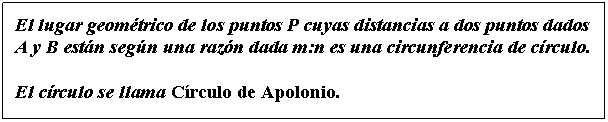
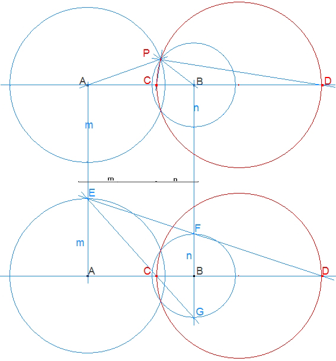
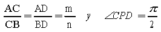

En el desierto del Sahara y en tres puntos A, B, C, que forman los vértices de un triángulo equilátero de 700 km de lado, se encuentran tres vehículos cuyas velocidades respectivas son de 20 km/h, 40 km/h y 60 km/h, comunicados por radio con el centro de operaciones, reciben la orden de partir a reunirse lo antes posible. ¿Dónde está situado el punto de la reunión? (las motos siempre están en movimiento, precisión del editor)
Calendario Matemático (1999), 31 de Marzo. Selección por Germán Bernabeu Soria, del CEP de ELDA.
Solución de José María Pedret, Ingeniero naval. Espulgas de Llobregat. (27 de enero de 2004)
Resolveremos el problema aprovechando que tenemos cabri:
a) resolveremos el problema en general.
b) aplicaremos al caso de un triángulo equilátero de 700 km de lado.
Si los vehículos se desplazan todo el tiempo, todos usan el mismo tiempo (t) para llegar al punto de reunión.
A vehículo a 20 km/h, B vehículo a 40 km/h y C vehículo a 60 km/hora.
De aquí obtenemos
Demostraremos ahora el siguiente teorema:


• Si trazamos las bisectrices interiores PC y exteriores PD de APB entonces:
 |
Los puntos C y D dividen la línea AB interiormente y exteriormente siguiendo la razón dada para todo P. Como el segmento CD se ve desde P bajo un ángulo recto, el lugar geométrico de P será la circunferencia con CD por diámetro.
• Se dice que C y D dividen armónicamente AB según la razón m:n, y el problema se convierte en: Dividir armónicamente una línea dada según una razón dada.
Las paralelas AE et BF están según la razón dada. BG es igual a BF. EG y EF cortan entonces AB según los puntos buscados. La mediatriz es un caso particular con m=n.
c.q.d.
SOLUCION GENERAL
Atendiendo al enunciado del problema y al teorema demostrado, el punto buscado P está en la intersección de los siguientes lugares geométricos:
Lugar 1: Lugar geométrico de los puntos P cuyas distancias a A y a B están según la razón VA/ VB.
Lugar 2: Lugar geométrico de los puntos P cuyas distancias a A y a C están según la razón VA/ VC.
SOLUCION PARTICULAR CON CABRI
Usamos el sistema de coordenadas de cabri y hacemos A=(0,0) y B=(7,0).
Hallamos C por la construcción de un triángulo equilátero de base AB.
Trazamos tres segmentos en proporciones 1, 2, 3.
Trazamos el Círculo de Apolonio de A y B con razón 1/2.
Trazamos el Círculo de Apolonio de A y C con razón 1/3.